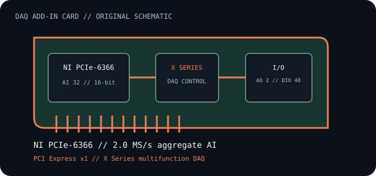

[ INDIVIDUAL COMPONENT // DATA ACQUISITION ]
NI PCIe-6366
NI X Series multifunction data-acquisition card for analog, digital, and counter/timer measurement. This model-specific record summarizes the documented channel configuration and host interface.

IDENTIFICATION: Match the PCIe-6366 marking, board revision, and connector before wiring. The figures below are device maxima; channel mode, scan configuration, terminal accessories, and measurement conditions affect usable acquisition rates.
Specifications and service checks
| Catalog subcategory | Industrial and measurement cards |
|---|---|
| Exact model / family | National Instruments PCIe-6366, X Series multifunction DAQ |
| Host bus / slot | PCI Express x1 add-in card; confirm physical clearance, slot wiring, platform support, and required chassis resources in the host and card manuals. |
| Analog inputs | 32 channels, 16-bit resolution; up to 2.0 MS/s aggregate sampling rate as specified for this model. Verify differential/single-ended mode and per-channel scan limits in the specification. |
| Other I/O | 2 analog output channels, 48 digital I/O lines, and four 32-bit counter/timers, as listed for this model. |
| Driver / operating-system compatibility | Requires a supported NI-DAQmx release. The compatible Windows/Linux distributions and release limits depend on the selected NI-DAQmx version; check NI’s current compatibility table before choosing an OS or driver. |
| Compatibility and wiring | Use the exact model’s connector pinout, terminal block/cable, electrical limits, and grounding/shielding instructions. Do not connect signals until ranges, common-mode limits, and accessory compatibility are verified. |
Installation and archival notes
- Record the board revision, serial/date code, NI-DAQmx version, host chipset, slot location, terminal block and cable part numbers.
- Confirm PCIe electrical compatibility and the driver’s OS support before installation; card-edge fit alone is not proof of host or software compatibility.
- Keep signal voltage within the exact specification and use proper grounding, isolation, and ESD precautions. Disconnect field wiring before servicing the host.
- Use the model-specific calibration interval and measurement documentation for precision work; nominal resolution is not a calibration accuracy guarantee.
Model-specific sources
- NI — PCIe-6366 specificationsManufacturer specifications for this exact model, including host interface and channel/rate limits.
- NI — NI-DAQmx operating-system compatibilityCheck the OS and driver support matrix for the exact software release selected.
- Linux kernel — PCI support documentationLinux PCI enumeration and driver context; this generic reference is not a device-specific support guarantee.
Manufacturer manuals and current driver notes take precedence for calibration, pinouts, accessory compatibility, and supported operating systems.